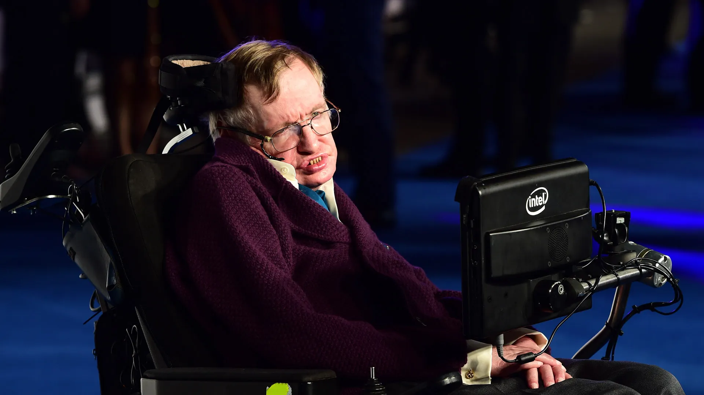
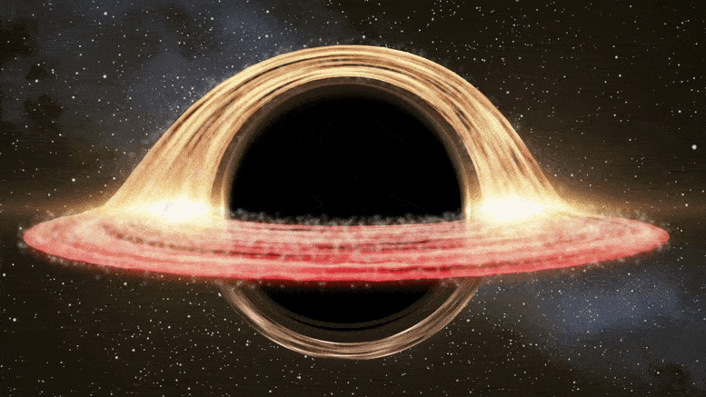
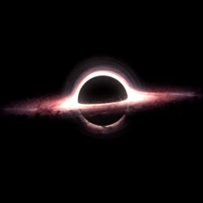

Theoretical Physicist "Stephen Hawking"
Stephen Hawking was born on 8 Jan 1942, which was the 300th death anniversary of Galileo. In October 1959, at the age of 17, he began his university education.In October 1962, he began his graduate work at Trinity Hall at the University of Cambridge where, in March 1966, he obtained his PhD degree in applied mathematics and theoretical physics, specialising in general relativity and cosmology. In 1963, at age 21, Hawking was diagnosed with an early-onset slow-progressing form of motor neurone disease that gradually, over decades, paralysed him. But he not gave himself and now he became an inspiration to many people.
In this page we will discuss about
one of his inventions called "BLACK HOLES"


Black Holes
In 1974, Stephen Hawking predicted that the extreme gravitational force felt at the mouths of black holes — their event horizons — would summon photons into existence in this way. Gravity, according to Einstein's theory of general relativity, distorts space-time, so that quantum fields get more warped the closer they get to the immense gravitational tug of a black hole's singularity. Because of the uncertainty and weirdness of quantum mechanics, this warping creates uneven pockets of differently moving time and subsequent spikes of energy across the field. It is these energy mismatches that make virtual particles emerge from what appears to be nothing at the fringes of black holes, before annihilating themselves to produce a faint glow called Hawking radiation.
A black hole's surface area can't be decreased, which is like the second law of thermodynamics. It also has a conservation of mass, as you can't reduce its mass, so that's analogous to the conservation of energy," lead author Maximiliano Isi, an astrophysicist at the Massachusetts Institute of Technology, told Live Science. Black holes have an entropy, and it's proportional to their area. A black hole's surface area is set out by a spherical boundary known as the event horizon — beyond this point nothing, not even light, can escape its powerful gravitational pull. According to Hawking's interpretation of general relativity, as a black hole's surface area increases with its mass, and because no object thrown inside can exit, its surface area cannot decrease. But a black hole's surface area also shrinks the more it spins, so researchers wondered whether it would be possible to throw an object inside hard enough to make the black hole spin enough to decrease its area.
src: google atricles
